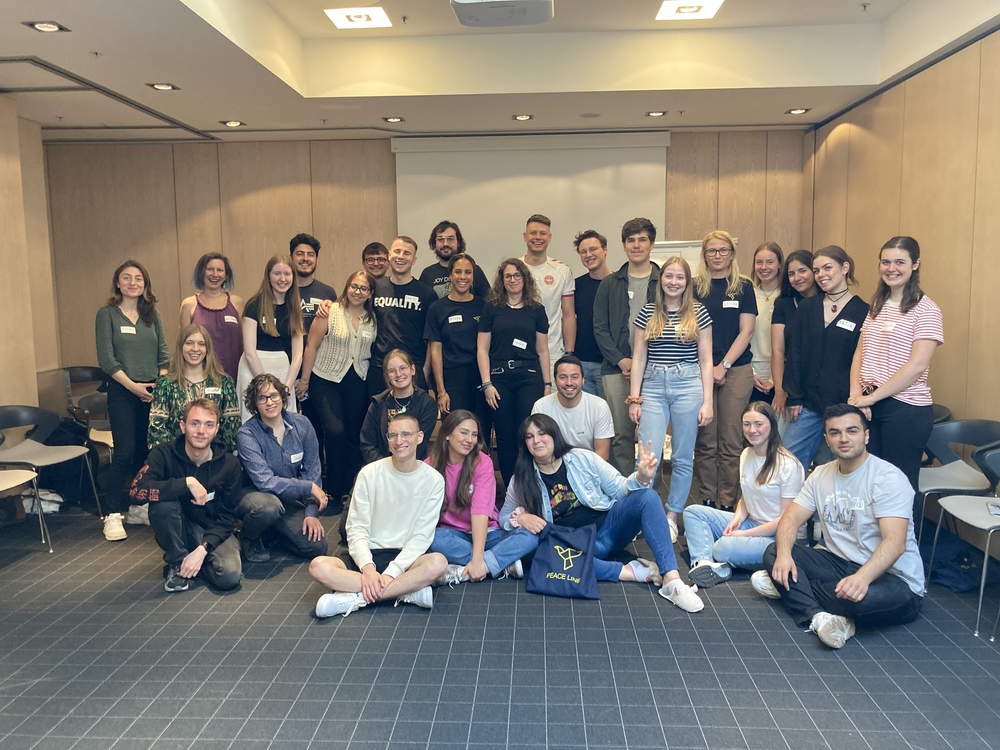

Peace Line Project
Peace line is an innovative project launched by the German War Graves Commission in 2020 to promote international encounters, understanding and European cooperation. PEACE LINE integrates young adults from all over Europe and connects the eventful history of the 20th century with perspectives for a sustainable future. Learn more at https://www.peaceline.eu/